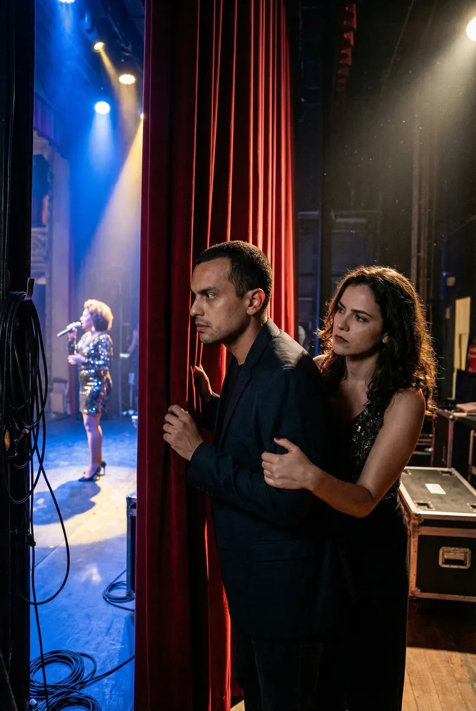
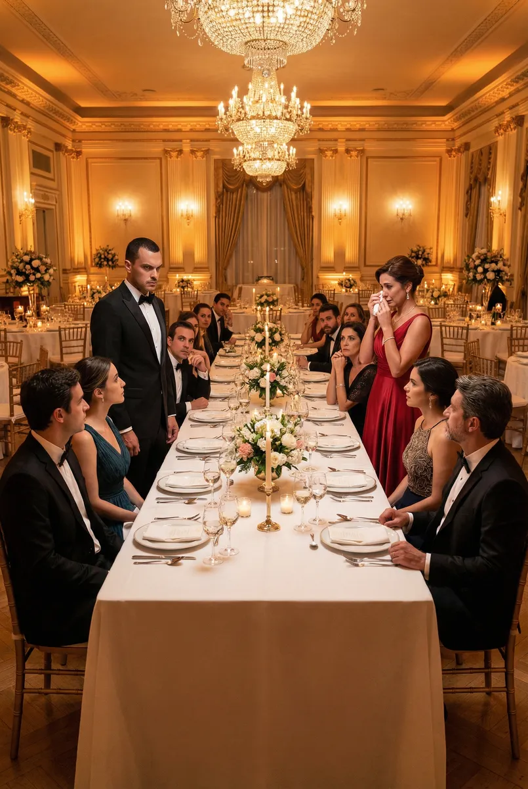

Ritmos do Coração: O Dilema de Ricardo
Protagonizado por Ricardo
Capítulo 1
Ricardo chega à mansão dos Sarutayá como o novo consultor de marketing da Chope do Luluzinha. Ao cruzar o jardim, seus olhos encontram Cida. A doçura da jovem, que ainda trabalha como arrumadeira enquanto sonha com a fama, desperta em Ricardo um sentimento imediato e genuíno que ele nunca sentiu antes.
Prompt: Realistic medium shot of Ricardo, a charming man in a light blue linen shirt, looking intently at Cida who is wearing a classic maid uniform in a lush tropical garden of a Rio mansion, sunlight filtering through leaves, 8k.
Capítulo 2
No entanto, Isadora, a filha mimada dos patrões, decide que Ricardo é o troféu que faltava em sua coleção. Ela o envolve em um jogo de sedução glamoroso, levando-o a festas exclusivas na Barra da Tijuca e prometendo-lhe contatos que podem alavancar sua carreira ao topo da elite carioca.
Prompt: Close-up of Isadora, a stunning blonde with heavy makeup and expensive jewelry, leaning in to whisper to a conflicted Ricardo at a high-end night club, neon blue and purple ambient lighting, cinematic photography.
Capítulo 3
A vida de Ricardo vira um caos quando as Empreguetes estouram nacionalmente. Ele se vê dividido entre o brilho falso de Isadora e o sucesso meteórico e autêntico de Cida. No camarim de um show lotado, ele precisa decidir se apoia a mulher que ama ou se mantém o status que a elite lhe oferece.
Prompt: Dramatic shot of Ricardo standing backstage, looking through a curtain at Cida performing on stage with microphones and bright spotlights, while Isadora stands behind him holding his arm possessively, realistic textures.

Capítulo 4
O confronto explode durante um jantar beneficente. Isadora tenta humilhar Cida publicamente, mas Ricardo, cansado das manipulações, se levanta diante das câmeras. Ele percebe que a sofisticação de Isadora é apenas uma máscara, enquanto o talento de Cida é a música que ele quer ouvir para sempre.
Prompt: Realistic wide shot of a gala dinner table, Ricardo standing up and looking sternly at Isadora while guests look on, Cida in a stunning red dress standing nearby with tears in her eyes, luxurious ballroom setting, warm lighting.

Capítulo 5
Ricardo escolhe seguir seu coração. Ele abandona os jogos de interesse e corre para os braços de Cida no topo do morro do Cantagalo ao amanhecer. Juntos, eles celebram um amor que nasceu na simplicidade e venceu o preconceito, provando que na vida, como na música, a harmonia real vem da alma.
Prompt: Cinematic final shot of Ricardo and Cida embracing and kissing on a lookout point in Rio de Janeiro, the sunrise painting the sky in orange and pink, the city and ocean in the background, ultra-realistic, romantic atmosphere.